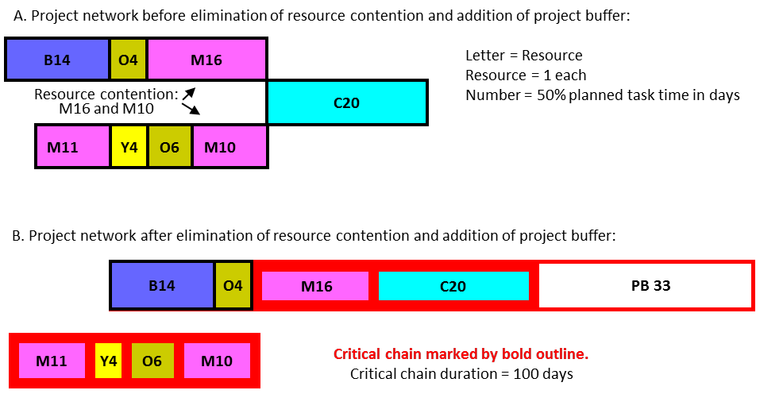

критическая цепь (critical chain) - самая длинная последовательность зависимых событий в сети проекта, учитывающая как задачи, так и зависимости ресурсов при завершении проекта. Критическая цепь - это ограничение проекта.
Использование: Продолжительность проекта - это сумма времени выполнения задач критической цепочки плюс буфер проекта.
Иллюстрация: в проекте ниже восемь задач и по одной единице каждого из пяти ресурсов (B, C, M, O и Y). Задачи M16 и M10 требуют ресурса M одновременно, что является примером конкуренции за ресурсы.
Один из вариантов - запустить задачу M10 раньше, чтобы устранить конфликт. Как только это будет сделано, критическая цепь станет M11-Y4-O6-M10-M16-C20. Эта последовательность задач плюс буфер проекта (PB) в 33 дня определяет продолжительность критической цепочки в 100 дней (хотя см. Предупреждение о длине критической цепочки ниже).

Внимание: внутренние организационные функции (например, менеджеры ресурсов, менеджеры проектов, разработчики программного обеспечения) используют термин «критическая цепь» для описания небуферизованной или незащищенной цепочки зависимых задач / ресурсов. В отличие от этого использования, продажи, маркетинг и другие функции, которые имеют дело непосредственно с клиентами, используют термин критическая цепь для описания общей продолжительности проекта, которая включает не только общее время задачи в критической цепочке, но также и буфер проекта. Общая продолжительность проекта обеспечивает основу (с поправкой на дату начала) для перспективных дат завершения проекта для клиентов. Голдратт в своем резюме на Сессии 3: «Управление проектами и разработка» «Спутниковой программы Голдратта» (Goldratt Satellite Program) использует термины “критическая цепь” и “защищенная критическая цепь” для описания внутреннего и внешнего использования термина соответственно.
См .: управление проектами критической цепи, защищенная критическая цепь.
#ccpm
Примечание АВ: (практикум 27.08.2021)
Critical chain - способ выполнения проекта. Project management. Прямой связи с “аналогией цепи нет”
Отличие от “Ресурсный критический путь” - тоже цепь. Однако, CCPM - это цепь и система буферов с агрегированием неопределенности.
См.: аналогия цепи
Синоним: critical chain